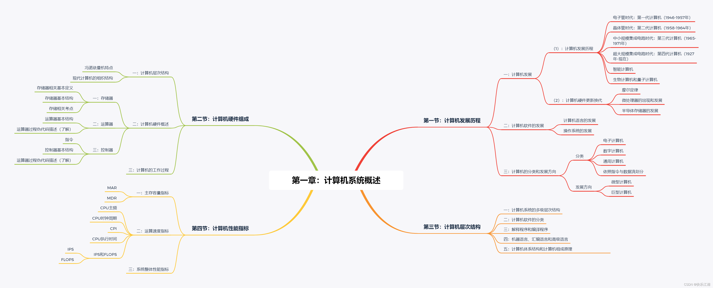
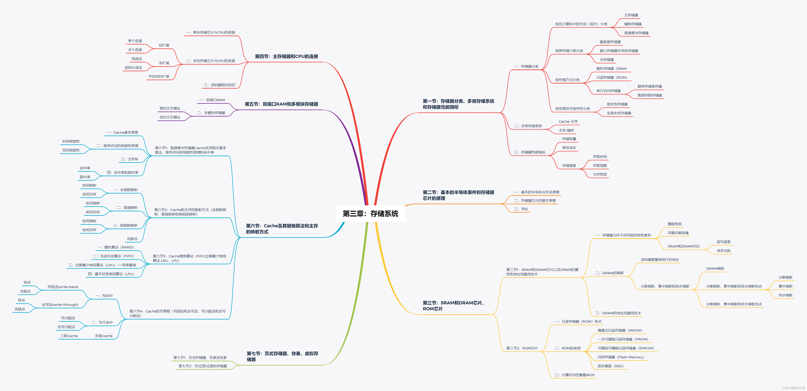
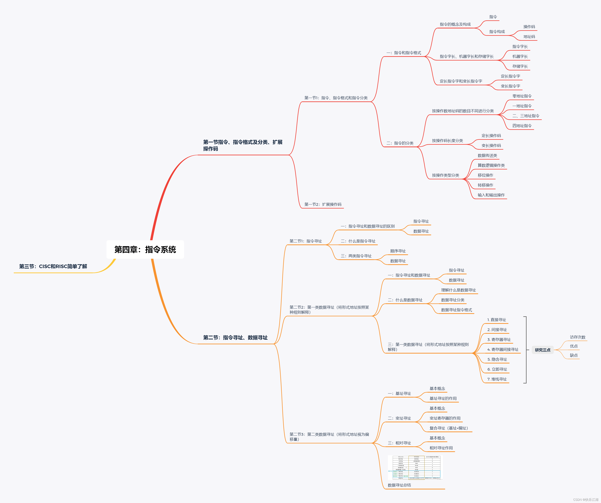
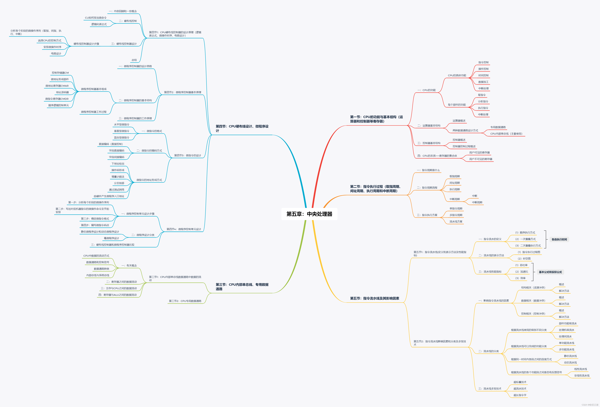
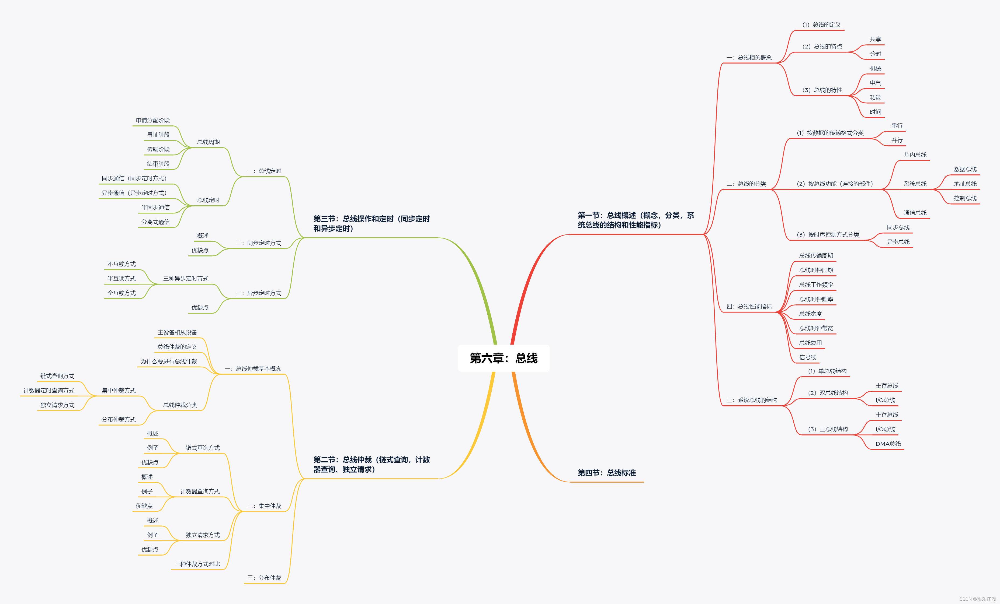
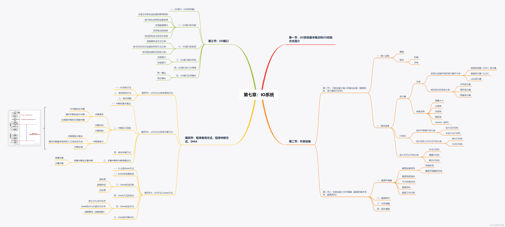

(计算机组成原理)第一章计算机系统概述-第一节：计算机发展历程
(计算机组成原理)第一章计算机系统概述-第二节：计算机硬件组成(存储器、运算器和控制器概述及计算机工作过程详解)
(计算机组成原理)第一章计算机系统概述-第三节：计算机层次结构
(计算机组成原理)第一章计算机系统概述-第四节：计算机的性能指标
(计算机组成原理)第一章计算机系统概述-王道重点习题及杂项总结
(计算机组成原理)第二章数据的表示和运算-第一节1：一文总结进制转换，妈妈再也不用担心我不会进制转换了
(计算机组成原理)第二章数据的表示和运算-第一节2：BCD码
(计算机组成原理)第二章数据的表示和运算-第一节3：无符号数的表示和运算
(计算机组成原理)第二章数据的表示和运算-第一节4、5、6、7：有符号数的表示和运算（定点整数和定点小数）、原反补码概念及其特性、溢出判断和符号扩展
本节考纲删除内容
(计算机组成原理)第二章数据的表示和运算-第二节1、2：算数逻辑单元和电路基本知识以及基本逻辑运算和全加器还有串行、并行加法器
(计算机组成原理)第二章数据的表示和运算-第二节3、4：补码加减运算器和标志位的生成
(计算机组成原理)第二章数据的表示和运算-第二节5：定点数的移位运算（算数移位、逻辑移位和循环移位）
(计算机组成原理)第二章数据的表示和运算-第二节6：定点数乘法运算（原码/补码一位乘法）
(计算机组成原理)第二章数据的表示和运算-第二节7：定点数除法运算（原码/补码一位除法）
(计算机组成原理)第二章数据的表示和运算-第二节8：详解C语言中的强制类型转换
(计算机组成原理)第二章数据的表示和运算-第二节9：数据的存储和排列
(计算机组成原理)第二章数据的表示和运算-第三节1：浮点数的表示
(计算机组成原理)第二章数据的表示和运算-第三节2：IEEE754标准
(计算机组成原理)第二章数据的表示和运算-第三节3：浮点数加减运算

(计算机组成原理)第三章存储系统-第一节：存储器分类、多级存储系统和存储器性能指标
(计算机组成原理)第三章存储系统-第二节1：基本的半导体原件和存储器芯片的原理
(计算机组成原理)第三章存储系统-第二节2：SRAM和DRAM芯片以及DRAM的属性和地址线复用技术
本节考纲删除内容
(计算机组成原理)第三章存储系统-第三节1：主存储器和CPU的连接
(计算机组成原理)第三章存储系统-第三节2：双端口RAM和多模块存储器
(计算机组成原理)第三章存储系统-第四节1：磁盘存储器（磁盘的基本结构，磁盘阵列）
(计算机组成原理)第三章存储系统-第五节1：高速缓冲存储器Cache及其相关基本概念、程序访问的局部性原理和命中率
(计算机组成原理)第三章存储系统-第五节2：Cache和主存的映射方式（全相联映射、直接映射和组相连映射）
(计算机组成原理)第三章存储系统-第五节3：Cache替换算法（FIFO,近期最少使用算法-LRU，LFU）
(计算机组成原理)第三章存储系统-第五节4：Cache的写策略（写回法和全写法，写分配法和非写分配法）
注意：分页管理相关内容属于操作系统重点研究内容，计组了解即可。或者说这一节可以跳过，学习完操作系统就明白了
(计算机组成原理)第三章存储系统-第六节1：页式存储器、页表及快表
(计算机组成原理)第三章存储系统-第六节2：页式/段式虚拟存储器
(计算机组成原理)第三章存储系统：本章习题

(计算机组成原理)第四章指令系统-第一节1：指令、指令格式和指令分类
(计算机组成原理)第四章指令系统-第二节2：第一类数据寻址（将形式地址按照某种规则解释）
(计算机组成原理)第四章指令系统-第二节3：第二类数据寻址（将形式地址视为偏移量）
(计算机组成原理)第四章指令系统-第三节1：X86汇编语言基础
-(计算机组成原理)第四章指令系统-第三节2、3：常用的x86汇编指令
(计算机组成原理)第四章指令系统-第四节：CISC和RISC简单了解

(计算机组成原理)第五章中央处理器-第一节：CPU的功能与基本结构（运算器和控制器等寄存器）
(计算机组成原理)第五章中央处理器-第二节：指令执行过程（取指周期、间址周期、执行周期和中断周期）
(计算机组成原理)第五章中央处理器-第三节1：CPU内部单总线数据通路中数据的流动
(计算机组成原理)第五章中央处理器-第三节2：CPU专用数据通路
(计算机组成原理)第五章中央处理器-第四节1：CPU硬布线控制器的设计原理（逻辑表达式，微操作时序，电路设计）
(计算机组成原理)第五章中央处理器-第四节2：微程序控制器基本原理
(计算机组成原理)第五章中央处理器-第四节4：微程序控制单元设计
此部分内容将会在第七章和操作系统的第一章进行学习，可跳过
(计算机组成原理)第五章中央处理器-第六节1：指令流水线(定义和表示方法及性能指标)
(计算机组成原理)第五章中央处理器-第六节2：指令流水线影响因素和分类及多发技术
(计算机组成原理)第五章中央处理器-第六节3：五段式指令流水线
(计算机组成原理)第五章中央处理器-第七节1：多处理器的基本概念
(计算机组成原理)第五章中央处理器-第七节2：硬件多线程的基本概念

(计算机组成原理)第六章总线-第一节：总线概述（概念，分类，系统总线的结构和性能指标）
(计算机组成原理)第六章总线-第二节：总线仲裁（408不考了解即可）
(计算机组成原理)第六章总线-第三节：总线操作和定时（同步定时和异步定时）

(计算机组成原理)第七章输入和输出系统-第一节1：I/O系统基本概念和I/O控制方式
(计算机组成原理)第七章输入和输出系统-第一节2：外部设备之输入和输出设备（键盘鼠标、显示器和打印机）
(计算机组成原理)第七章输入和输出系统-第四节1：I/O方式之程序查询方式
(计算机组成原理)第七章输入和输出系统-第四节2：I/O方式之程序中断方式
(计算机组成原理)第七章输入和输出系统-第四节3：I/O方式之DMA方式